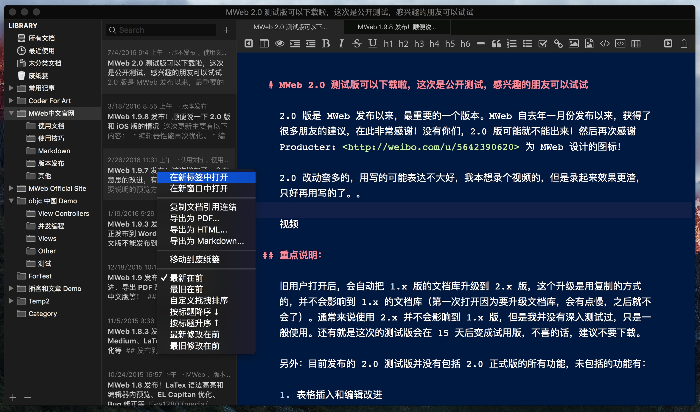
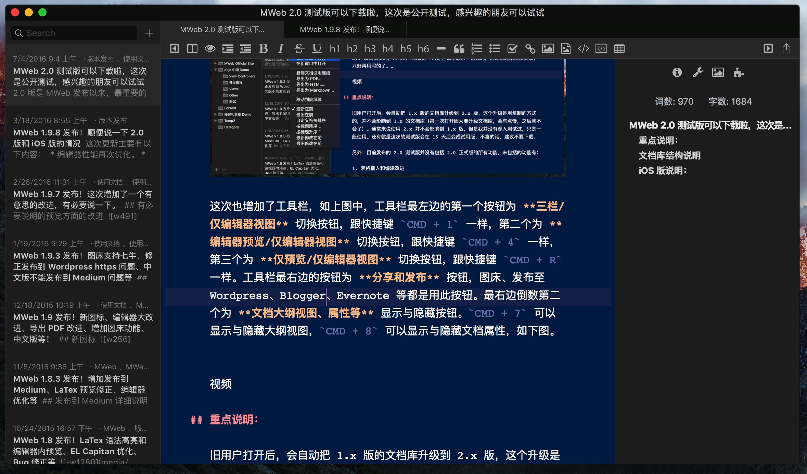
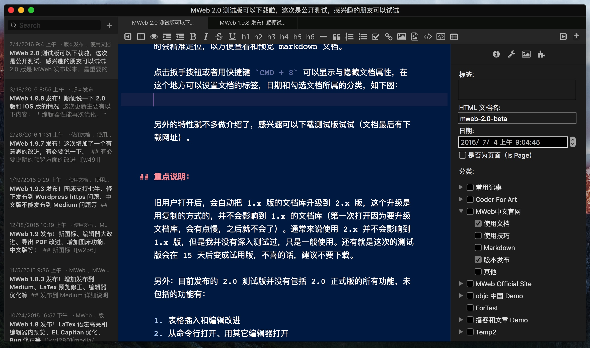

MWeb 2.0 测试版可以下载啦，这次是公开测试，感兴趣的朋友可以试试
2.0 版是 MWeb 发布以来，最重要的一个版本。MWeb 自去年一月份发布以来，获得了很多朋友的建议，在此非常感谢！没有你们，2.0 版可能就不能出来！然后再次感谢 Producter: http://weibo.com/u/5642390620 为 MWeb 设计的图标！
2.0 改动蛮多的，用写的可能表达不大好，我本想录个视频的，但是录起来效果更渣，只好再用写的了。。
新版的 MWeb 界面如下，这个版本终于是可以自定义文档库的位置了，可以打开 偏好设置 - 通用设置 里设置文档库的位置。另外也增加了 Tabs 功能，MWeb 的 Tabs 的功能设计得跟 Sublime 相同，就是一个窗口中会有一个可替换的 Tab，用点击第二栏的列表时，会使用这个可替换的 Tab 显示点击的文档。如下图，如果用 右键 - 在新标签中打开 或者双击则会打开一个固定的新 Tab。

这次也增加了工具栏，如上图中，工具栏最左边的第一个按钮为 三栏/仅编辑器视图 切换按钮，跟快捷键 CMD + 1 一样，第二个为 编辑器预览/仅编辑器视图 切换按钮，跟快捷键 CMD + 4 一样，第三个为 仅预览/仅编辑器视图 切换按钮，跟快捷键 CMD + R 一样。工具栏最右边的按钮为 分享和发布 按钮，图床、发布至 Wordpress、Blogger、Evernote 等都是用此按钮。最右边倒数第二个为 文档大纲视图、属性等 显示与隐藏按钮。CMD + 7 可以显示与隐藏大纲视图，如下图。

值得一说的是，当切换为仅预览视图时（CMD + R），点击右侧大纲视图时会精准定位，以方便查看和预览 markdown 文档。
点击 扳手 按钮或者用快捷键 CMD + 8 可以显示与隐藏文档属性，在这个地方可以设置文档的标签、日期和勾选文档所属的分类，如下图：

另外的特性就不多做介绍了，感兴趣可以下载测试版试试（文档最后有下载网址）。
重点说明：
旧用户打开后，会自动把 1.x 版的文档库升级到 2.x 版，这个升级是用复制的方式的，并不会影响到 1.x 的文档库（第一次打开因为要升级文档库，会有点慢，之后就不会了）。通常来说使用 2.x 并不会影响到 1.x 版，但是我并没有深入测试过，只是一般使用。还有就是这次的测试版会在 15 天后变成试用版，不喜的话，建议不要下载。
另外：目前发布的 2.0 测试版并没有包括 2.0 正式版的所有功能，未包括的功能有：
- 表格插入和编辑改进
- 从命令行打开、用其它编辑器打开
- 静态网站的一些小改进
- Wordpress 发布支持直接发布 markdown
- PlantUML 支持 -- 已否决
- 图床功能小改进
- 1.9.9 版发布后收到的一些改进建议。
- Mavericks 支持（上次微薄上说大话了，支持 Mavericks 还要做不少工作）
文档库结构说明
2.0 版的文档库由一个 sqlite 数据库文件 mainlib.db 和一个名为 docs 的文件夹组成。mainlib.db 保存的是分类信息、标签信息和静态网站生成的信息，docs 文件夹保存的是所有文档库的文档和图片、附件。docs 内除了所有 .md 文档外，还有一个 media 文件夹，media 文件夹内的文件夹名称都跟 docs 内的文档名对应，如果文档中带图片，则会在 media 内有一个对应的文件夹，里面放的是该文档的图片等附件。文档内是用相对地址进行引用。
综上所述，这一版本的文档库设计得非常开放，文档库还可以保存在任何位置，不再像之前版本那样，固定一个不可见的位置。所以，有动手能力的朋友可以随意读取文档库信息，包括写自己的静态网站生成器，也包括写程序在 Windows 上读取和修改文档库，再回到 mac 上用 MWeb 继续，还可以自己写程序生成各种格式的书等等。
iOS 版说明和测试版下载：
很多朋友可能更关注 iOS 版，这里说明一下。 iOS 版一定会有，事实上已经在开发了，但是发布时间并不能确定！
MWeb 2.0 测试版下载：>>点此下载<<